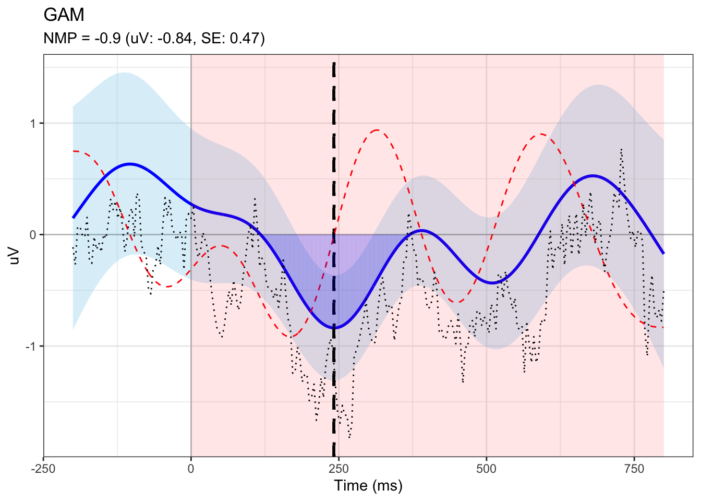

library(tidyverse)
library(mgcv)
library(itsadug)Laryngeal analysis (gam)
1 Notes
The analysis goal is to extract eeg GAM measure and correlate GAM-based measure with behavioral data.
The model to fit each individual’s data is: bam(uV ~ s(time, condition, bs = ‘fs’, m = 1) + s(time, stim, bs = ‘fs’, m = 1), data = df, discrete = TRUE)
- condition is the interaction term of type (standard vs. deviant) x poa (dorsal vs. glottal)
2 Libraries
When you click the Render button a document will be generated that includes both content and the output of embedded code. You can embed code like this:
3 Dataset and description
df.0 <- read_csv("../analysis data/gam/gam_F0.csv")
df <- df.0 %>%
pivot_longer(cols = 4:ncol(df.0), names_to = "time", values_to = "uV") %>%
separate(col = condition, into = c("poa", "blc1", "blc2", "stim_role", "item")) %>%
unite(col = "block", c("blc1", "blc2"), sep = "_") %>%
mutate(group = as.factor(group),
participant = as.factor(participant),
poa = as.factor(poa),
block = as.factor(block),
stim_role = as.factor(stim_role),
item = as.factor(item),
time = as.numeric(time)) %>%
mutate(
immn_direction = as.factor(case_when(
block=="highStan_lowDevi" & stim_role=="devi" ~ "high_to_low",
block=="lowStan_highDevi" & stim_role=="stan" ~ "high_to_low",
block=="lowStan_highDevi" & stim_role=="devi" ~ "low_to_high",
block=="highStan_lowDevi" & stim_role=="stan" ~ "low_to_high",
))
) %>%
# get condition (ignore direction for now)
unite(col = "condition", c("poa", "stim_role"), sep = "_", remove = FALSE) %>%
mutate(condition = as.factor(condition)) %>%
droplevels()- Description of the data
The dataset consists of rows and columns with the following column names:
- group = participant group (vot vs. f0)
- participant = participant number
- time = time in milliseconds (ranges from -200 to 800, in 4 ms bins)
- poa = place of articulation (dorsal vs. glottal)
- stim_role = stimulus role (standard vs. deviant)
- uV = ERP amplitude in microvoltages
- immn_direction = direction for computing iMMN
- group = participant group (vot vs. f0)
4 GAM-based individual measures
We extract the following GAM-based individual measures:
- trad_erp: average amplitude of observed data in specified time window
- model_area: Modelled Area = geometric area (amplitude * time) under the GAM curve. This measures the area under the peak (or maximum if there is no peak); only looking for positive area’s (or negative areas)
- peak_height: Height Modelled Peak = height of the peak of the GAM smooth, or the highest point if no peak
- NMP: Normalized Modelled Peak = a measure of robustness of the peak in units of SDs. I.e., how reliably does this subject show the peak? If value is above 1, then the 95% confidence bands do not overlap, and we can be certain the peak is there. If value is between 0 and 1, then there is a lot of variation between the items.
- half_area_latency: Modelled Area Median Latency = fractional area latency, i.e. latency at 50% of the area (midpoint)
- model_peak_time: Modelled Peak Latency = latency of the modelled peak
Additionally we compute the following measures, for extra information:
- trad_norm_erp: normalized traditional average
- hasPeak: TRUE/FALSE; is there a peak in the modeled signal in the search window?
- gam_erp: average of the GAM smooth in the time window
For all these measures holds that we look at a specified time window or search window. The traditional measure requires a narrower time window (e.g. 150-300 ms post stimulus onset), the GAM measures require a search window which can be wider (here we use 0 to 800 ms post stimulus onset). We only look for negative peaks.
The next section of code runs the GAMs for one single participant, extracts the measures and creates the plots (in a separate pdf document).
4.1 Single-participant illustration
The model to fit each individual’s data is:
bam(uV ~ s(time, condition, bs = ‘fs’, m = 1) + s(time, stim, bs = ‘fs’, m = 1), discrete = TRUE)
# parameters ####
# search window
search_min = 0; search_max = 800;
# pre-defined window (this can be from permutation test)
trad_min <- 150; trad_max <- 300
# single participant id
ppt <- "F0_0001"
# prepare single participant data ####
df_one <- df %>%
filter(participant == ppt) %>%
droplevels() %>%
# logical vector
mutate(isDeviant = ifelse(stim_role=="devi", 1, 0)) # make it binary to model the difference directly
# modeling #### (ignore direction)
model <- bam(
uV ~
# poa * stim_role + # Fixed effects
s(time, by = condition) + # Smooth for each POA x stim_role
s(time, item, bs = "fs", m = 1), # Random smooth by item
data = df_one,
discrete = TRUE # Use this for large data for speed
)
# summary(model)
# get peak height, peak time, and NMP ####
# get values and standard error for every individual time point
min_time <- min(model$model[, "time"])
max_time <- max(model$model[, "time"])
nval = length(seq(min_time, max_time))
fit_dorsal_devi <- itsadug::get_modelterm(model, select=1, n.grid = nval, as.data.frame = TRUE)
fit_dorsal_stan <- itsadug::get_modelterm(model, select=2, n.grid = nval, as.data.frame = TRUE)
# dorsal MMN
dat <- fit_dorsal_devi %>%
mutate(condition = "mmn",
fit = fit_dorsal_devi$fit - fit_dorsal_stan$fit,
se.fit = sqrt(fit_dorsal_devi$se.fit^2 + fit_dorsal_stan$se.fit^2))
# step 2: find derivative and search for peak (derivative=0) of a negativity (previous derivative value < 0, which means the actual ERP waveform is decreasing before this point)
drv <- data.frame(diff(dat$fit)/diff(dat$time)) # the derivative of the function
colnames(drv) <- 'dYdX'
drv$time <- rowMeans(embed(dat$time,2)) # center the X values for plotting
drv$dYdX.next <- c(drv$dYdX[2:nrow(drv)],NA)
drv$dYdX.prev <- c(NA,drv$dYdX[1:(nrow(drv)-1)])
# MMN peak: before going down, after going up
drv$local_peak <- ((drv$dYdX.next > 0 & drv$dYdX < 0) | (drv$dYdX.next > 0 & drv$dYdX == 0 & drv$dYdX.prev < 0))
# if at least one local peak
if (sum(drv[drv$time>=search_min & drv$time<=search_max, ]$local_peak, na.rm=TRUE) >= 0) {
hasPeak = TRUE
# get all peak times
all_peak_times <- drv[which(drv$local_peak & drv$time>=search_min & drv$time<=search_max), "time"]
# initialize peak height
peak_height <- Inf
# if each local peak time
for (i in 1:length(all_peak_times)) {
# get the two fitted data points centering the local peak
peakdat = dat[dat$time >= floor(all_peak_times[i]) & dat$time <= ceiling(all_peak_times[i]), ]
# if the current height is smaller than the original peak height
if ( min(peakdat$fit) < peak_height) {
# update peak height
peak_height <- min(peakdat$fit)
# update peak time
peak_time <- all_peak_times[i]
# update se
peak_se <- peakdat[which.min(peakdat$fit),]$se.fit
# update NMP
NMP <- peak_height / (1.96*peak_se) # relative peak measure (if < 1 then 95%CI overlaps with 0 at point of peak)
}
}
} else { # if no local peak
hasPeak <- FALSE
# get general peak in search span
subdat <- dat[dat$time>=search_min & dat$time<=search_max, ] # subset data
# find peak
peak_height <- min(subdat$fit)
peak_index <- which.min(subdat$fit)
# get time
peak_time <- subdat[peak_index, "time"] # first time value with peak value
peak_se <- subdat[peak_index, ]$se.fit
NMP <- peak_height / (1.96*peak_se)
}
# if we are looking for a valley and the value is positive), then no correct positivity/negativity
if (peak_height >= 0) {
peak_height <- NA
peak_time <- NA
peak_se <- NA
NMP <- NA
}
# first time point should never be the maximum or the minimum, as this means that in case of a minimum, the first point is the lowest, and it is only increasing (so no real minimum)
# subset search data
sdat <- dat[dat$time>=search_min & dat$time<=search_max, ]
if (peak_time == min(sdat$time)) {
peak_height <- NA
peak_time <- NA
peak_se <- NA
NMP <- NA
}
# get average of the GAM smooth in the time window
gam_dat = dat[dat$time>=trad_min & dat$time<=trad_max, ]
gam_erp = mean(gam_dat$fit) # average of the fitted model in time window
# get area and half-area latency ####
if (is.na(peak_time)) {
area = NA
half_area_latency = NA
} else {
area = 0
start = round(peak_time) # start time to take integral from
firsttime = search_min
lasttime = search_max
# area to the right from the peak
for (i in start:search_max) {
val = sdat[sdat$time == i,]$fit
# if derivative <=0
if (val <= 0) {
area = area + abs(val)
} else { # end of peak, so stop going in this direction
break
}
lasttime = i
}
# area to the left from the peak
beforestart = start-1
if (beforestart >= search_min) {
for (j in beforestart:search_min) { # to the left from the peak
val = sdat[sdat$time == j,]$fit
# if derivative <=0
if (val <= 0) {
area = area + abs(val)
} else { # end of peak, so stop going in this direction
break
}
firsttime = j
}
}
# get half area latency
halfarea = 0
for (k in firsttime:lasttime) {
val = sdat[sdat$time == k, ]$fit
halfarea = halfarea + abs(val)
if (halfarea >= 0.5 * area) {
half_area_latency = k
break
}
}
}
# save single-participant data
tmp <- data.frame(ppt, area, hasPeak, peak_height, peak_se, NMP, peak_time, half_area_latency, gam_erp)4.1.1 visualization
## plotting
# get data for plotting
dat$fit.plus.se = dat$fit + dat$se.fit
dat$fit.minus.se = dat$fit - dat$se.fit
# get y-axis limits
ymax <- ceiling(max(c(abs(dat$fit.minus.se), dat$fit.plus.se)))
ymin <- -ymax
# x-axis limites
xmin = min(dat$time)
xmax = max(dat$time)
ydmax <- 4*max(c(abs(drv$dYdX)), drv$dYdX) # only use 1/4 of the vertical space to make the derivative less prominent
ydmin <- -ydmax
# raw ERP data
erp_df <- model$model %>%
group_by(condition, time) %>%
summarize(mean_uV = mean(uV)) %>%
pivot_wider(names_from = condition, values_from = mean_uV) %>%
mutate(uV_diff = dorsal_devi - dorsal_stan)
# df for shades
segments_df <- sdat[sdat$time %in% firsttime:lasttime, ] %>%
mutate(x = time, xend = time,
y = 0, yend = fit)
# plotting
fig <- ggplot(dat, aes(x = time, y = fit)) +
geom_ribbon(aes(ymin = fit - se.fit, ymax = fit + se.fit), fill = "skyblue", alpha = 0.3) +
geom_line(color = "blue", linewidth = 1) +
annotate("rect", xmin = search_min, xmax = search_max,
ymin = -Inf, ymax = Inf,
fill = "red", alpha = 0.1) +
geom_vline(xintercept = 0, linetype = "solid", alpha = 0.2) +
geom_hline(yintercept = 0, linetype = "solid", alpha = 0.2) +
# add line for peak time
geom_vline(xintercept=peak_time, linetype = "dashed", linewidth=1) +
geom_vline(xintercept=half_area_latency, linetype = "dotted", linewidth=1) +
# add derivative
geom_line(data = drv, aes(x = time, y = dYdX*100), color = 'red', linetype = "dashed") +
# add shades
geom_segment(data = segments_df,
aes(x = x, xend = xend, y = y, yend = yend),
color = "blue", alpha = 0.1) +
# raw erp
geom_line(data = erp_df, aes(time, uV_diff), linetype = "dotted", color="black", linewidth=0.5) +
theme_bw() +
labs(
title = "GAM",
subtitle = paste0("NMP = ",round(NMP,digits=2)," (uV: ",round(peak_height,digits=2),", SE: ", round(peak_se,digits=2), ")"),
x = "Time (ms)", y = "uV")
print(fig)